STAM 102 :: Lecture 02 :: Units of Memory, Hardware, Software and Classification of Computers

Units of Memory
The memory unit is the principal storage of the computer. All the data and instructions that the computer needs at a moment are stored here. All storage devices are characterized with the following features:
- Speed
- Volatility
- Access method
- Portability
- Cost and capacity
Linking Memory with the other units
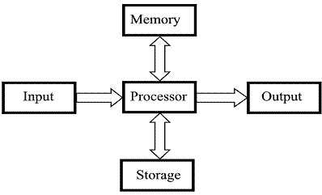
Basic Units of Measurement
The components of the computer can recognize only two states that is presence or absence of an electrical signal. Two symbols used to represent these two states are 0 and 1, and are known as BITS (an abbreviation for BInary DigiTS). 0 represents the absence of a signal, 1 represents the presence of a signal. A BIT is, therefore, the smallest unit of data in a computer and can either store a 0 or 1.
Since a single bit can store only one of the two values, there can possibly be only four unique combinations:
00 01 10 11
Bits are, therefore, combined together into larger units in order to hold greater range of values.
BYTES are typically a sequence of eight bits put together to create a single computer alphabetical or numerical character. More often referred to in larger multiples, bytes may appear as Kilobytes (1,024 bytes), Megabytes (1,048,576 bytes), GigaBytes (1,073,741,824), TeraBytes (approx. 1,099,511,000,000 bytes), or PetaBytes (approx. 1,125,899,900,000,000 bytes).
Bytes are used to quantify the amount of data digitally stored (on disks, tapes) or transmitted (over the internet), and are also used to measure the memory and document size.
Types of memory
Computers use several different types of memory. They are:
- Main Memory / Primary Memory units
- Two most important are
- RAM (Random Access Memory)
- ROM (Read-only Memory)
- They work in different ways and perform distinct functions
- CPU Registers
- Cache Memory
- Secondary Memory/Auxiliary Memory
Also termed as ‘auxiliary’ or ‘backup’ storage, it is typically used as a supplement to main storage. It is much cheaper than the main storage and stores large amount of data and instructions permanently. Hardware devices like magnetic tapes, Floppy Disk, Hard Disk, Optical disks, Compact Disk (CD), Digital Versatile Disk (DVD) and Blu-ray Disc (BD) fall under this category.
Computer’s memory can be classified into two types – RAM and ROM.
RAM or Random Access Memory is the central storage unit in a computer system. It is the place in a computer where the operating system, application programs and the data in current use are kept temporarily so that they can be accessed by the computer’s processor. The more RAM a computer has, the more data a computer can manipulate.
Random access memory, also called the Read/Write memory, is the temporary memory of a computer. It is said to be ‘volatile’ since its contents are accessible only as long as the computer is on. The contents of RAM are cleared once the computer is turned off.
ROM or Read Only Memory is a special type of memory which can only be read and contents of which are not lost even when the computer is switched off. It typically contains manufacturer’s instructions. Among other things, ROM also stores an initial program called the ‘bootstrap loader’ whose function is to start the computer software operating, once the power is turned on.
Hardware
Hardware, in the computer world, refers to the physical components that make up a computer system. There are many, many different kinds of hardware that can be installed inside and connected to the outside of a computer. However, there are several standard pieces of hardware that can be found as part of nearly every computer:
- Input Devices - Key board, Mouse..
- CPU - (Brain) Named on model: 80286, 80386, 80486, Pentium, P-II, Core 2 Duo..
- Output Devices - VDU/Screen, Printer
- Memory - RAM - Active, temporary ROM - Permanent.
- Ancillary Storage devices: Floppy, Hard Disk, CD ROM, Tapes etc.
- Scanner, Modem, Digital Camera, Video adopter, Computer Projector, Slide maker, etc.
Software
Software is a general term for the various kinds of programs used to operate computers and related devices. Software is classified as follows:
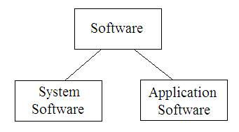
System software
System software refers to the operating system and all utility programs that manage computer resources at a low level. Operating system controls and manages the computing resources. Examples of operating system: Windows, Unix, MSDOS, Linux, Mac.
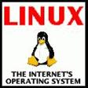 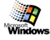 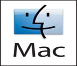
Systems software includes compilers, loaders, linkers, and debuggers.
Applications software comprises programs designed for an end user, such as word processors, database systems, and spreadsheet programs. Application software makes computer popular and easy to use. Common application software:
- Microsoft Word, WordPerfect
- PowerPoint
- Netscape, Internet Explorer
- PhotoShop, Photo-Paint
- Quick Time
- Dreamweave
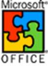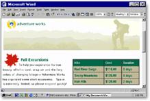
Classification of Computers
Computers are available in different shapes, sizes and weights, due to these different shapes and sizes they perform different sorts of jobs from one another. They can also be classified in different ways. All the computers are designed by the qualified computer architectures that design these machines as their requirements.
A computer that is used in a home differs in size and shape from the computer being used in a hospital. Computers act as a server in large buildings, while the computer also differs in size and shape performing its job as a weather forecaster.
A student carrying a laptop with him to his college is different in shape and size from all the computers mentioned above. Computers are classified as follows:
Super computer
{kind=link}
The biggest in size, the most expensive in price than any other is classified and known as super computer. It can process trillions of instructions in seconds. Governments specially use this type of computer for their different calculations and heavy jobs. Different industries also use this huge computer for designing their products. In most of the Hollywood's movies it is used for animation purposes. This kind of computer is also helpful for forecasting weather reports worldwide.
Mainframes
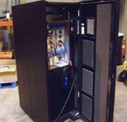
Another giant in computers after the super computer is Mainframe, which can also process millions of instruction per second and capable of accessing billions of data. This computer is commonly used in big hospitals, air line reservations companies, and many other huge companies prefer mainframe because of its capability of retrieving data on a huge basis.
Minicomputer
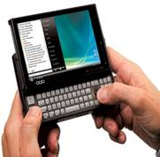
This computer is next in the line but less offers less than mainframe in work and performance. These are the computers, which are mostly preferred by the small type of business personals, colleges, etc.
Personal computers
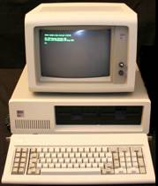
Personal computer is the computer mostly preferred by the home users. These computers are lesser in cost than the computers given above and also, small in size; they are also called PCs in short for Personal computers. This computer is small in size. Today this is thought to be the most popular computer in all.
Notebook computers
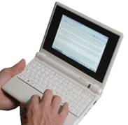
Having a small size and low weight the notebook is easy to carry to anywhere. A student can take it with him/her to his/her school in his/her bag with his/her book. This is easy to carry around and preferred by students and business people to meet their assignments and other necessary tasks. The approach of this computer is also the same as the Personal computer. It can store the same amount of data and having a memory of the same size as that of a personal computer.
| Download this lecture as PDF here |